SO YOU WANNA TUTORIAL, HUH?
alright.
Heres goes...
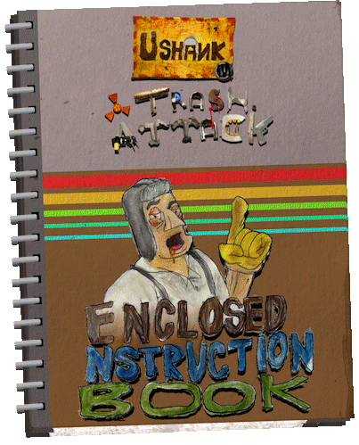
INSTALLATION AND RUNNING

-PHYSICAL
-DIGITAL
if you downloaded from a storefront (e.g. steam) you just need to, go to your library, search for "Ushank in Trash Attack" click on the game and then press download.
choose which directory it will be installed in wait for the downloader to download, and it will extract itself automatically. After that you'll will be able to press play and, enjoy the game!
if you downloaded from itch.io or torrent you need to choose the download for your operating system (Windows, Linux or Mac) download it, go to your default downloads directory and extract it with an extractor tool inside a chosen directory.
When it finishes extracting, open up that directory and then find Ushank.exe (Windows), Ushank.x86_64 (linux) or Ushank.app (Mac). Then you'll be able to enjoy the game!
CONTROLS

-MENUS
Point the mouse to click on clickable icons or use the arrow keys or d-pad to quickly move from one icon to another.
-LOOKING
you look via pointing the mouse or the right control stick in the desired direction. most of the time the curser is were you shoot and go locally forward. can be altered by getting drunk
-MOVEMENT
Dependent on where you looking (and what planet your on) you move forward(W) ,strafe(A,D), and go backwards(S) in the facing direction of where your looking at. WASD is the keys to success here!
jumping is also available (space-bar, A button) which allows to launch yourself upwards (dependent on gravity)
you also go squatting! or crouching (CTRL key, right stick press) to get under tight ducks!
-WEAPONRY
weapons are select either by (default) the mouse wheel or the numbers keys or the (default) front shoulder buttons.
weapon are fired, or in case of grenades, used, when you click or press the primary fire key (default left mouse, rear trigger right).
some weapons have an alternate firing mode (default right mouse, right trigger right), and even fewer need reloading(R key, Y button). you'll know when a
weapon needs reloading when the clip and mag counter is on screen.
quick grenade are thrown quickly (default G key, B button) with the quick grenade keys and don't un-equip weapons when used (they can still be used as regular weapons tho)
can be cycled through with quick grenade select keys(default X key Z key, D-pad right)
would you like to know more?
-INTERACTION & CARRY ITEMS
interaction is done with the interact key (default E key, X button).
You'll know if you click on something as it will do something, you will know when
it wont by
-VEHICLES
Dependent on the vehicle chosen, wether that be a car, a tank, a coaster, you look with the mouse,
move with the WASD keys or left joystick (except for rollercoaster and mine-carts, because they are on rails)
you can enter vehicles with the interact key (default E key, X button)
below is a table on what controls are required for each vehicle:
| -Input | -USHANK'S CAR | -MINE-CART/ROLLERCOASTER | -TANK | -CHOPPER (pending) |
|---|---|---|---|---|
| LOOKING(default Mouse,right joystick) | N/A | Looking if a fixed viewport, crosshair moves with your mouse. Like a rails shooter! | Looking moves to a desired. The turret on its x-axis and moves the gun and cannon up and down on the y-axis. | looking points you to a desired direction |
| Firing(default Mouse buttons,rear bumpers) | N/A | shoots a projectile where you crosshair is | primary fire shoots gun, alternate fire shoot cannon | primary fire shoots Cannon, alternate fire shoots SnotShot |
| FORWARD KEY (default W, left joystick up) | Accelerates the car forward | N/A | Moves the tank forward, locally of its BODY direction | Flies forward |
| LEFT & RIGHT KEY (default A D, left joystick left right) | Turns the car left or right | N/A | Turns the tank left or right, locally of its BODY direction | Strafes the chopper leftwards or rightwards |
| BACKWARDS KEY (default W, left joystick up) | Accelerates the car Backwards | N/A | Moves tank backwards, locally of its BODY direction | Flies backwards |
| Exit key (default E key, X button) | Exits the vehicle | Exits the vehicle and launches you | Exits the vehicle | Exits the vehicle |
HEADS UP DISPLAY
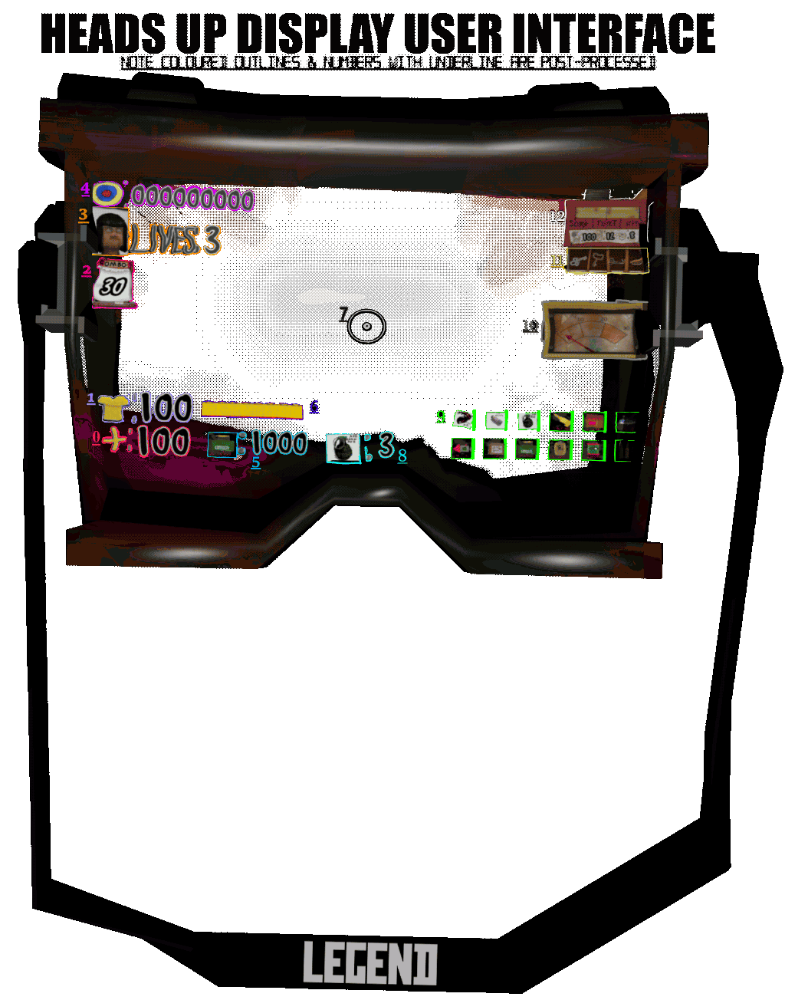
| Number | Title | Description |
|---|---|---|
| 0 | Health Count | How much Blood and health ushank has in his body |
| 1 | Armor | How much armor ushank is currently wearing |
| 2 | Combo Counter | The Counter on how many subsequent kills Ushank gets in a short amount of time |
| 3 | Lives Counter | The amount of reserved 1-ups ushank has in his banks |
| 4 | Score Counter | how many Points/life essence Ushank has |
| 5 | Current Weapon Ammo counter | The ammo of current weapon equipped |
| 6 | Clip and Mag Counter | counter for how many bullets Ushank have in a reloadable weapon mag or clip |
| 7 | Crosshair | the general direction of where a projectile comes from (not accounting for speed or drop off) |
| 8 | Current Grenade Count | the icon of the current quick grenade and the ammo attached to it |
| 9 | All Ammo Table | quick overview of all the Ushank's current ammo cache , including depleted ones that have already been picked up |
| 10 | Geiger Counter | how irradiated Ushank is. goes up to 3.6. not great, not terrible. |
| 11 | Key Item Slots | the current key items that the player has picked up |
| 12 | Drunk Bar & Carry items |
(top)The current inebriation experienced by Ushank (bottom) the vodka fill percentage, amount of pies and beer carry items |
>WEAPONRY & COMBAT
for more about weapons
GUNS are a important part of any shooter game!
Ammo are needed for any weapon that aren't a hammer or have infi-bullets (they include the infi-pistol, dual infi-pistols, bolts,
and MP40
) they are acquired by walking into ammo pickups. 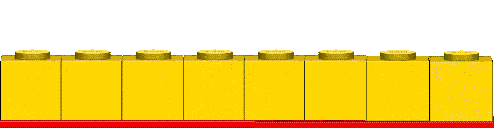
Clips / mags (they use the same counter) are used for some weapons. they include the infi-pistol, dual infi-pistols, revolver, dual revolver MP40 and M1 Garand!
for EVEN MORE about weapons
here is the list of ammos btw!
-Bullet,
-Fuel,
-Flamethrower,
-Flare,
-Hammer, // Infinite
-Infibullet,
-Minigun,
-Nail,
-Rocket,
-Salmon,
-Shell,
-Sniper,
-AvoGrenades,
-LooGrenades,
-BoltGrenades, // Infinite
-TrashHeadGrenades
DRUNKENNESS!!! (+Status effects)
-DRUNKENNESS
USHANK THE DRUNK CARPENTER, is of course, a heavy drinker! and you know what they say, alcohol is the problem, and solution for all of life's problems!
so in a gameplay sense, it'll give you health back but will also make your aim and screen to go wild! don't worry, Ushank's liver is way stronger then a rampaging redneck (somehow?)
which means faster sobering!
how can you achieve this?
either by finding alcohol via the levels, or more commonly, using CARRY ITEMS!!!
also can be used as anti rads
-RADIATION
OF COURSE WE NEED RADIATION!!! Radiation kills you slowly in this game (but faster then real life), when ever the Geiger counter clicks, thats -1 health for you! the more rads you have the faster your health will drain! so look out for radiation signs!
-MAXIMUM SPEED
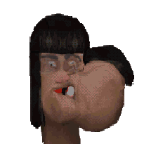
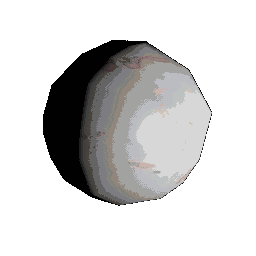
Usually done when sucking down (walking into) a JAWBREAKER, your speed will increase twice fold! this last for 15 seconds.
-MAXIMUM STRENGTH
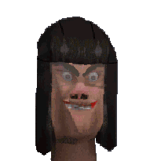
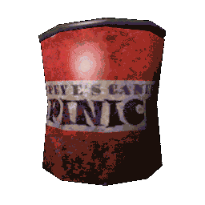
QUADRUPLES your damage output! GREAT for gibbing smaller enemies and whipping big big guys with ease! last for 30 seconds.
-MAXIMUM INVULNERABILITY
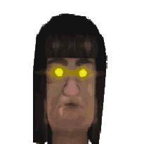
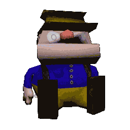
Ushank gets sooooo happy when finding a Wiporio plush that he doesn't give a damn anymore! therefore hes INVULNERABLE!
At least until that high wears off. ~30 seconds.
-MAXIMUM AMMO
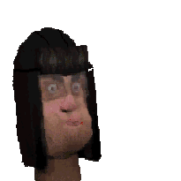
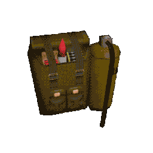
FIND a backpack of ammo? -get infinite ammo for 45 seconds, now you can unleash hellfire on your opponents!!! Also don't eat it Ushank!!
HEALTH SYSTEMs
-HEALTH & BLEEDING OUT
Health is technically separated into 2 parts; Destination Health and Bleeding health;
Bleeding Health is how much Health you have left on Ushank,
Destination Health is where Bleeding Health will go.
Getting damaged via bullets, rockets or spurs, etc, will make you Destination health go to
however damaging the source is.
you will start to bleed out until it gets to the Destination A.K.A. when Ushank's blood clots.
if Bleeding Health gets to 0, then you'll lose a life
goes up to 100.
-ARMOR
Armor
Regaining armor can be done via walking into an armor pickup
Armor reduces the amount of the damage you will take, but not all of it, only around ~75% of it!
goes up to 100.
-REGAINING
regaining health is done in several ways, there are health Pickups (Such as Medkits)
that you simply walk into to gain health back, or using Inventory carry items
most options will make you regain Destination Health
-CARRY ITEMS
beer(total 12), pies (total 8) and vodka (total 1, at varying fill percentages) are items you can pickup and use later in... basically anywhere except menus and cut-scenes! 2 out of 3 of them make you drunk
and therefore loose some control, but you get health back! Risk and reward, its all about balance, is what i say!
- beer gives you +10 drunk & +10 health,
-pie gives you -10 drunk & +10 health
-vodka gives you how ever much health your missing minus how much is in the bottle, and increases your drunk by that amount!
if you would like to know more about drunkenness, click 'ere!
ARCADY SYSTEMS
you might be asking yourself: "HOW IS THIS IMMERSIVE AT ALL?" its because its actually the life essence
that Ushank absorbs via DEATH! Also its just a game. you should really just relax!
-COMBO SYSTEM
Combos. What can be said about them? they are gained by murdering enemies by yourself, but be careful!
they reset to 0 after a short amount of time, but can be replenished by murder or a little bit by collecting points!
hell, if you get a combo of 20, you'll go on a Super Combo Killing Spree!
now, you might be asking yourself: what is the purpose of the combo system?:
Score!
-SCORE
Score is a system that been around since the dinosaurs. Although its use has fallen
out in recent years, its still (i think) gives a sense of accomplishment and competitiveness.
its gained by actions such as:
-Treasure hunting
-Animal hunting
-doing it in a timely manner
-whipping bosses
and last but not least...
-Murder
what is the purpose of the score system?:
Lives!
-LIVES
the Lives system is something else that has fallen out in recent years. especially for
shooter games. you gain it via getting an additive amount of score. Every 10000+ points
(dependent on the difficult level algorithm) an extra life is granted! don't loose all of them!
else you get a Game Over! Your story ends here! until you load your last save.
what is the purpose of the Lives system?:
it'll take too long to make quick-saves!